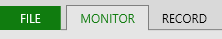
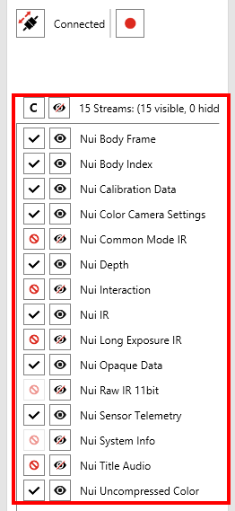
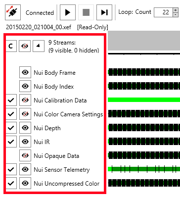

The Hands On Labs to complete a sample application for Windows 8.1 and the Kinect 2 for Windows
Estimated Time to Complete: 25 min
This lab is part of a series of hands on labs which teach you how to use almost every available feature of the Kinect 2. This eleventh lab in the series, and it explains how to record and playback data feeds using the Kinect Studio application for Kinect 2.
Note: Files generated by Kinect Studio are generally very large, make sure that you have enough hard drive space for this. For example a 50 second clip with the basic recording is ~8.5GB.
This lab will explain the following:
This exercise will teach you how to use Kinect Studio and change various settings.
If you haven’t already downloaded the public Kinect 2 SDK, you can download it from: Microsoft Kinect 2 SDK ~280MB
If you have already downloaded the SDK, it can be found in C:\\Program Files\Microsoft SDKs\Kinect\v2.0_1409\Tools.
Open Kinect Studio v2.
Select the Monitor tab at the top if not already selected.
Connect to service by clicking this button (Connects the Kinect Studio tool to the Kinect studio service).
Click the Start monitoring button.
The default feed should be visible in 2D straight away, the depth feed. You can change the feeds by clicking the settings button or right clicking in the feed panel and clicking settings. You can monitor both the 2D view and 3D view by selecting their respected views at the top. Both Viewports have their own settings, although only the Depth Feed and Body Joints will show in 3D.
Controls for the navigation of the 3D view feed include:
You can cycle between 2D and 3D by clicking the Monitor 2/3D View buttons. Both 2D and 3D have their own settings, although only the Depth Feed and Body Joints will show.
You now have an introductory understanding of the Kinect Studio application and have the ability to monitor Kinect v2 feeds.
This exercise will teach you how to record interactions and play them back with Kinect Studio application.
In this lab these recordings are by default stored locally in your documents folder under Kinect Studio/Repository, make sure to delete unwanted files after you are finished with this lab as the files created by Kinect Studio are usually very large, based on the settings.
Select the Record tab located at the top of the screen.
Connect to service if not already connected.
Select all of the streams that need to be recorded. Your application requires all of the frames to be present in the recorded data regardless if you want to view them or not. This is because your application uses the Infrared, Color, Depth, Body Index and Body frames through the MultiSourceFrameReader.

If your own application uses a single source frame reader then you only need the relevant feed for that reader and can disable the recording of other feeds to get a smaller file size.
Record yourself acting some interactions such as hand above your head, hands on your head, hands on your knees, one hand up.
Click stop when you are finished recording. The Play tab at the top of the application should now be selected. If not, select it.
Here the functionality of the Play view is very extensive, you can add in pause points on the video timeline, you can add markers for notes on the interactions and you can also add in and out points. You learn to use these tools.
The Pause points work as expected, once the video is playing and it hits a pause point its pauses. For example you can place these so that you can see the top most point of your interaction.
Markers allow you to add various Meta data to a point in the timeline. For example you can place a marker so that you know what the interaction is for.
In and Out points allow you to start and stop the recording at your desired time. This would be useful if you did a lengthy recording and only wanted to play a certain section.
That also ties into Loop Count, which can be used to loop recordings. Set this to your desired number.
You can playback your recording by clicking the play button. If you do not see anything in the Playback 2D / 3D views then you must navigate to the settings and select the Kinect feeds you wish to see. Only one feed (color, body index, depth and infrared) + Body data can be shown at once. If that does not work still make sure you have enabled “Connect to Service”.
Make sure that you rename your clip, as in the later labs it will be easier for you to find and use.
This exercise will show you how to use your recording to test your application.
Navigate to the Play tab .
Make sure you still have enabled “Connected to Service”.
Make sure that the relevant feeds are visible and the streams are selected with a check:
Ensure that Kinect Studio isn’t playing a video currently.
Open your Visual Studio Kinect 2 Sample project.
Build and run the application.
Go back to Kinect Studio and in the Play tab, select the Play button.
Your application should now be playing the recorded data in all of the views. Remember to run without the attached debugger (Ctrl+F5) for performance if using the Body Mask and Background Removed.
This lab taught you how to set up Kinect Studio and record Kinect data for playback and testing using the Kinect SDK.
You can now use this to test certain interactions with your application and not have to do the same interaction over and over again. It is also useful if you need to test multiple people interacting at the same time,
you won’t need to have multiple people available to help you each time you want to test your application.